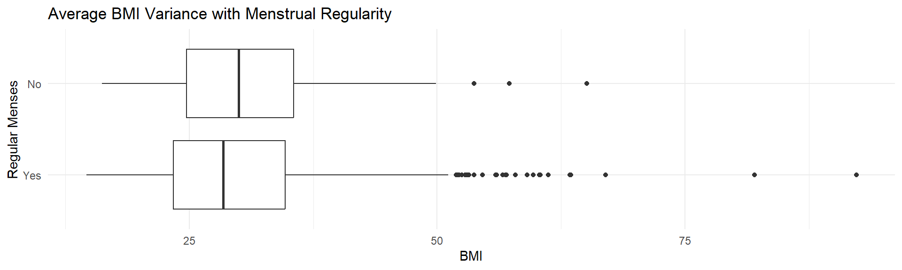

library(nhanesA)
library(tidyverse)
library(readxl)
library(scales)
library(DT)
library(gt)
library(haven)
theme_set(theme_minimal(base_size = 24, base_family = "sans"))Reproductive Health Dashboard
library(nhanesA)
library(writexl)
library(tidyverse)
dir.create("data", showWarnings = FALSE)
#pull in data from from NHANES and save it
#DEMO
demo_raw <- nhanes('P_DEMO') |> tibble()
saveRDS(demo_raw, "data/P_DEMO.Rds")
#BMI
bmi_raw <- nhanes('P_BMX') |> tibble()
saveRDS(bmi_raw, "data/P_BMX .Rds")
#Fertility lavs
amh_raw <- nhanes('P_TST') |> tibble()
saveRDS(amh_raw, "data/P_TST.Rds")
#REGULAR MENSES
menses_raw <- nhanes('P_RHQ') |> tibble()
saveRDS(menses_raw, "data/P_RHQ.Rds")
# Now that data are saved, I can just read in the tibble
demo_raw <- readRDS("data/P_DEMO.Rds")
bmi_raw <- readRDS("data/P_BMX .Rds")
amh_raw <- readRDS("data/P_TST.Rds")
menses_raw <- readRDS("data/P_RHQ.Rds")
demo_reduced <- demo_raw |>
select(SEQN,RIAGENDR, RIDAGEYR, RIDSTATR)
bmi_reduced <- bmi_raw |>
select(SEQN,BMXBMI)
amh_reduced<- amh_raw |>
select(SEQN,LBX17H, LBXAMH, LBXEST,LBXFSH, LBXLUH, LBXPG4)
menses_reduced <- menses_raw |>
select(SEQN,RHQ031,RHQ074, RHQ076)
NEW <- left_join(demo_reduced, bmi_reduced, by = "SEQN")
NEW2 <- left_join(NEW, amh_reduced, by = "SEQN")
NEW3 <- left_join(NEW2, menses_reduced, by = "SEQN")
write_xlsx(NEW3, "Project_B.xlsx")
#Clean the data
Clean_data <- read_excel("Project_B.xlsx")
#Select only female
Clean_data <- Clean_data |>
filter(RIAGENDR == "Female")
#Select only those interviewed and tested
Clean_data <- Clean_data |>
filter(RIDSTATR == "Both interviewed and MEC examined")
#Select those over 18 and under 44 because per survey pregnancy related questions ended at this age
Clean_data <- Clean_data |>
filter(RIDAGEYR > 18 & RIDAGEYR<44)
#Convert categorical variables to factors RHQ031
Clean_data$RHQ031<- factor(Clean_data$RHQ031, levels = c("Yes", "No"))
#Convert categorical variables to factors RHQ074
Clean_data$RHQ074<- factor(Clean_data$RHQ074, levels = c("Yes", "No"))
#Convert categorical variables to factors RHQ076
Clean_data$RHQ076<- factor(Clean_data$RHQ076, levels = c("Yes", "No"))
write_xlsx(Clean_data, "Clean_Data.xlsx")
# Address missing numbers
# Keeps only completely full rows for data for study 1
clean_data_study1 <- Clean_data %>% drop_na()
write_xlsx(clean_data_study1, "Clean_Data_Study1.xlsx")
#Analysis B (boxplot)
ggplot(clean_data_study1, aes(x=BMXBMI, y = RHQ031, fill = BMXBMI))+
geom_boxplot()+
labs (title = "Average BMI Variance with Menstrual Regularity",
x = "BMI",
y = "Regular Menses")+
scale_fill_manual(
values = c(
"Regular" = "#F4A6B8",
"Irregular" = "#A6CEE3"
)
) +
theme_minimal()Warning: The following aesthetics were dropped during statistical transformation: fill.
ℹ This can happen when ggplot fails to infer the correct grouping structure in
the data.
ℹ Did you forget to specify a `group` aesthetic or to convert a numerical
variable into a factor?Warning: No shared levels found between `names(values)` of the manual scale and the
data's fill values.
#Analysis C - Compare 3-6 means using independent samples ()
#Analysis D
#Analysis E
# Regression
# Regression
# Comparison